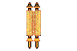
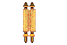

What seige weapon can launch a 90kg projectile over 300 meters you ask? If your answer to this question is a catapult or ballista then i suggest you go back to your peasant village you filthy commoner! Only a majestic trebuchet could accomplish such a heavenly goal. Can YOU use a counterweight to launch a 90 kg projectile over 300 meters? Yeah, I thought not thats why the only weapon to reclaim the Holy Land must be the glorious trebuchet.
 
